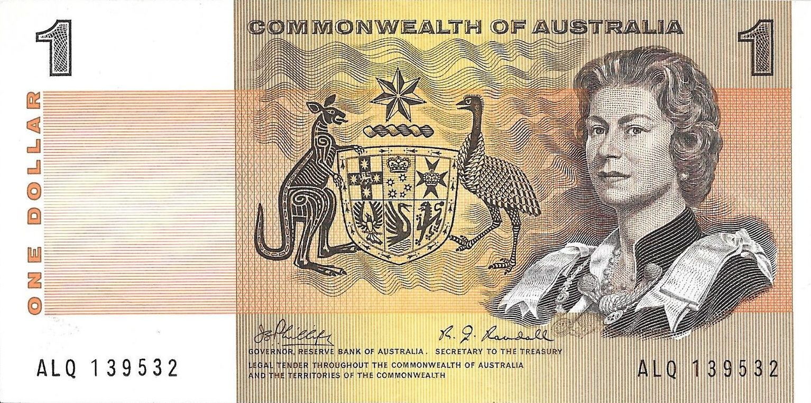
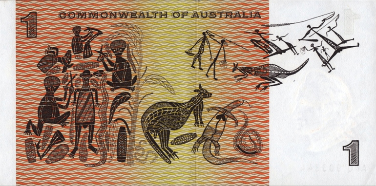

$1 Banknote
The note features Queen Elizabeth II wearing Garter robes on the obverse with the Australian coat of arms. This portrait was based on a photo taken by Douglas Glass. The reverse of the note features Aboriginal contemporary art, created by David Malangi. The artwork depicts the "mortuary feast" of one of the artist's creation ancestors, Gunmirringu, the great ancestral hunter.